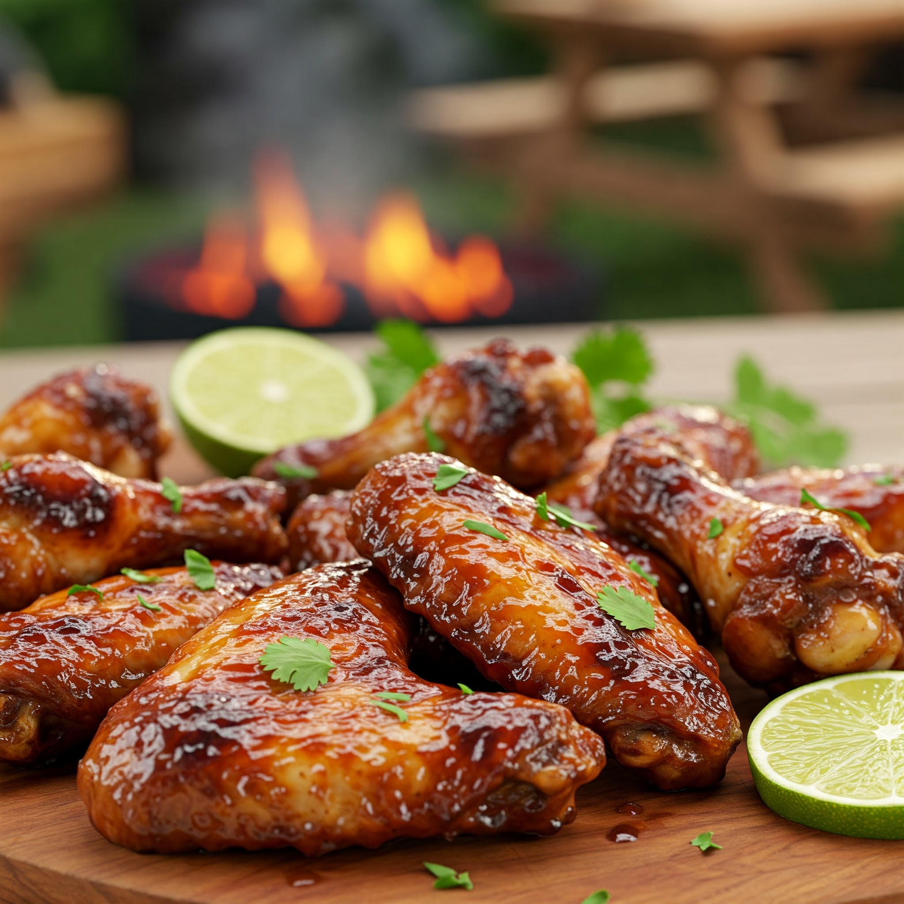

BBQ Chicken Wings
Ingredients
- 500g chicken wings
- 1/2 tsp salt
- 1/2 tsp black pepper
- 1/2 tsp paprika
- 1 tbsp oil
- 1/2 cup BBQ sauce (store-bought or homemade)
- 1 tsp honey (optional, for extra glaze)
Steps
- Preheat oven to 200°C (or use air fryer or pan method).
- Season chicken wings with salt, pepper, paprika, and oil. Mix well.
- Arrange on a baking tray and bake for 25–30 minutes or until crispy and cooked.
- In a bowl, mix BBQ sauce and honey if using.
- Toss baked wings in the BBQ sauce to coat evenly.
- Optional: Bake again for 5 minutes for stickier texture.
- Serve hot with dip or salad on the side!